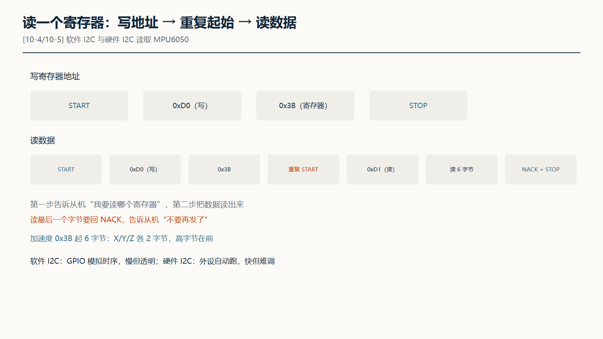

课程时长：约 90 分钟（三节） | 深度版 | 配套结构图与看图理解
10-3 讲硬件 I2C 外设，10-4 用软件 I2C 读 MPU6050，10-5 换成硬件 I2C。
同一件事两种实现：软件模拟让你看懂时序，硬件外设让你省 CPU——先软后硬，理解最深。
用 GPIO 模拟出完整 I2C 时序
配置硬件 I2C 并处理事件
读出 MPU6050 的加速度/角速度
知道总线死锁怎么恢复

图 19 读取一个寄存器：写地址 → 重复起始 → 读数据 → NACK + STOP
读一个寄存器分两段：先写“我要读哪个寄存器”，再用重复起始切换到读，把数据取回来。
最后一字节要回 NACK，告诉从机“不要再发了”，然后 STOP 释放总线。
Start、SendByte、RecvAck、RecvByte、Stop。每个函数内部就是拉高拉低 SCL/SDA，并插入微秒级延时。
GPIO 必须配成开漏输出，否则无法让从机拉低 SDA 应答。
void I2C_W_SCL(uint8_t b) { GPIO_WriteBit(GPIOB, GPIO_Pin_8, b); Delay_us(2); }
void I2C_W_SDA(uint8_t b) { GPIO_WriteBit(GPIOB, GPIO_Pin_9, b); Delay_us(2); }
void I2C_Start(void)
{
I2C_W_SDA(1); I2C_W_SCL(1);
I2C_W_SDA(0); /* SCL 高时 SDA 下降 */
I2C_W_SCL(0);
}
硬件 I2C 把时序拆成若干“事件”：起始已发送、地址已发送、收到数据、应答等，每个事件对应一个标志位，程序按事件推进。
调试难点在于：某个事件没等到就卡死，必须加超时。
| 事件 | 含义 |
|---|---|
| SB | 起始已发送 |
| ADDR | 地址已发送并收到应答 |
| RXNE | 收到一个字节 |
| TXE | 发送寄存器空 |
| BTF | 字节传输完成 |
| 对比 | 软件 I2C | 硬件 I2C |
|---|---|---|
| CPU 占用 | 高（一位一位等） | 低 |
| 速率 | 几十 kHz | 100k / 400kHz |
| 引脚 | 任意 GPIO | 固定复用 |
| 调试 | 透明，好改 | 事件多，易卡 |
int16_t ax = (buf[0] << 8) | buf[1]; int16_t ay = (buf[2] << 8) | buf[3]; int16_t az = (buf[4] << 8) | buf[5]; /* ±2g 量程：16384 LSB/g */ float ax_g = ax / 16384.0f;
如果从机在传输中复位，可能一直拉低 SDA，主机再也发不出起始——这就是死锁。
恢复办法：把 SCL 当普通 GPIO，手工打 9 个时钟脉冲，再发一个 STOP，让从机把剩余位吐完。
for (i = 0; i < 9; i++) {
I2C_W_SCL(1); I2C_W_SCL(0);
}
I2C_Stop();
软件模拟的价值：你能亲眼看到每一位怎么变，理解起始、应答、重复起始；换引脚也方便。这是“学会”与“会调库”的区别。
硬件 I2C 为什么难调：事件顺序固定，少等一个标志就卡死；加上从机时钟拉伸，超时设计不好就死机。所以产品里常见“硬件 + 超时 + 恢复”。
例：软件 I2C 每半周期 2µs，一位 4µs，一字节 9 位 ≈ 36µs，整帧读 6 字节约 0.3ms——比硬件慢，但够用。
硬件 400kHz：一字节 9 位 ≈ 22.5µs，6 字节约 0.14ms。
±2g 量程、16384 LSB/g：读数 8192 对应 0.5g；±4g 时灵敏度减半。
| 错误写法 | 后果 | 正确做法 |
|---|---|---|
| GPIO 配成推挽 | 从机拉不低 SDA，读不到 ACK | 改开漏 |
| 读最后一字节回 ACK | 从机继续发，总线乱 | 回 NACK |
| 没有超时 | 从机不在线时死等 | 加超时退出 |
| 总线死锁不恢复 | 后续全部失败 | 9 时钟 + STOP |
为什么读操作要“写地址再读”：I2C 没有“随机读”指令，必须先把寄存器地址写进从机内部的地址指针，再切换到读，从机才会从该地址开始吐数据。
软件 I2C 的延时不能省：从机要求建立/保持时间，删掉 Delay_us 后逻辑没错但时序违规，表现为“偶尔能读、偶尔失败”。
读 WHO_AM_I 返回 0x68，确认链路通
静止时 Z 轴约 1g、X/Y 接近 0
快速翻转板子，看加速度数值变化
| 现象 | 原因 | 解决 |
|---|---|---|
| 读不到 ACK | 引脚没开漏或无上拉 | 改模式、加上拉 |
| 数值不变 | 寄存器地址写错 | 核对 0x3B/0x43 |
| 偶尔卡死 | 无超时 | 加超时与恢复 |
| 数据跳变 | 量程配置与换算不符 | 统一量程与系数 |
Q1. 软件 I2C 要几个函数？
A：Start/SendByte/RecvAck/RecvByte/Stop。
Q2. GPIO 为什么开漏？
A：从机要能拉低 SDA 应答。
Q3. 硬件 I2C 的事件有哪些？
A：SB、ADDR、RXNE、TXE、BTF。
Q4. 总线死锁怎么恢复？
A：9 个时钟 + STOP。
Q5. MPU6050 加速度怎么换算？
A：原始值 ÷ 灵敏度（±2g 时 16384）。
Q6. 为什么读最后要 NACK？
A：告诉从机停止发送。
Q7. 软件 I2C 能多快？
A：受延时限制，通常几十 kHz。
Q8. 怎么确认传感器在线？
A：读 WHO_AM_I 应为 0x68。
1. 读寄存器前要发什么？
答：寄存器地址（写操作）。
2. 最后一字节回什么？
答：NACK。
3. ±2g 时 1g 对应多少读数？
答：16384。
4. 死锁时打几个时钟？
答：9 个。
☐ 能手写软件 I2C
☐ 懂硬件事件
☐ 会读 MPU6050
☐ 会恢复死锁